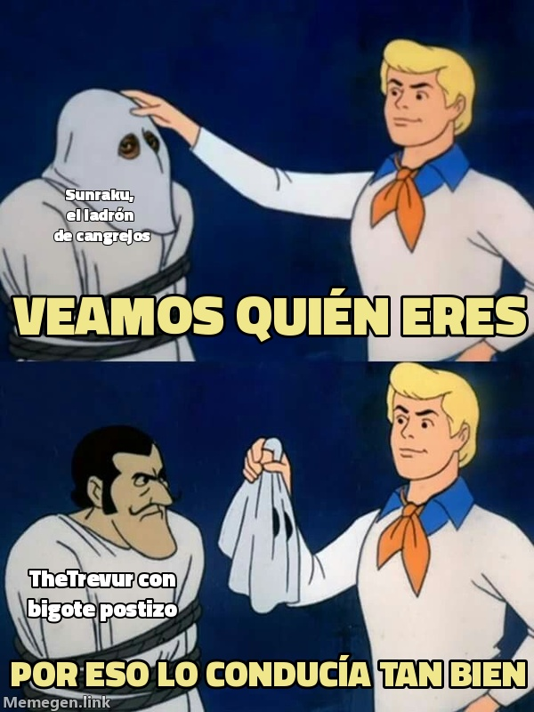

El ladrón del cangrejo tenía las llaves de casa
El registro de cuentas confirma que Sunraku#998 es de TheTrevur. El Urgot nunca estuvo huérfano: estuvo de incógnito.

El lunes, este periódico contó con todo el dramatismo del mundo que TheTrevur había desaparecido y que un tal Sunraku, el ladrón de cangrejos, se había llevado su Urgot y lo conducía mejor que el dueño. El martes publicamos la vuelta del Gran Maestre, su detención, sus cuatro muertes en el mismo rincón y una frase que hoy duele releer: el cangrejo estaba mejor con Sunraku.
El miércoles, el registro de cuentas de la Lonja de Aguasturbias zanjó el caso con una sola línea: Sunraku#998 figura a nombre de TheTrevur. No hubo robo. Hubo un hombre que se ponía bigote postizo para jugar con su propio campeón y luego leía en el periódico que el desconocido lo hacía mejor. Esa cuenta, por cierto, subió 50 LP en Flex. En la Lonja, donde Barbanegra está bajo investigación precisamente por liar las cuentas de cada jugador con las de sus smurfs, la noticia se ha recibido con un silencio muy incómodo.
Ya sin careta, TheTrevur sacó el Urgot en la última Flex del día: entregó la primera sangre a los dos minutos y medio, se recompuso, se llevó el Heraldo y terminó 14/7/8 con victoria. Antes había estrenado Malphite y lo había perdido, y con el Cho'Gath se llevó el dragón y el Barón para acabar como el peor del grupo en una partida ganada. Tres victorias y una derrota, y el talento intacto para quedar mal incluso cuando gana.
El comisario Cobretuerca ha archivado la ficha de Sunraku con una nota a mano: «Denunciante y sospechoso firman con la misma letra».
Queda cerrado el caso del cangrejo huérfano. Nunca tuvo un padre ausente. Tuvo un padre con dos cuentas que se leía los elogios a sí mismo en tercera persona.